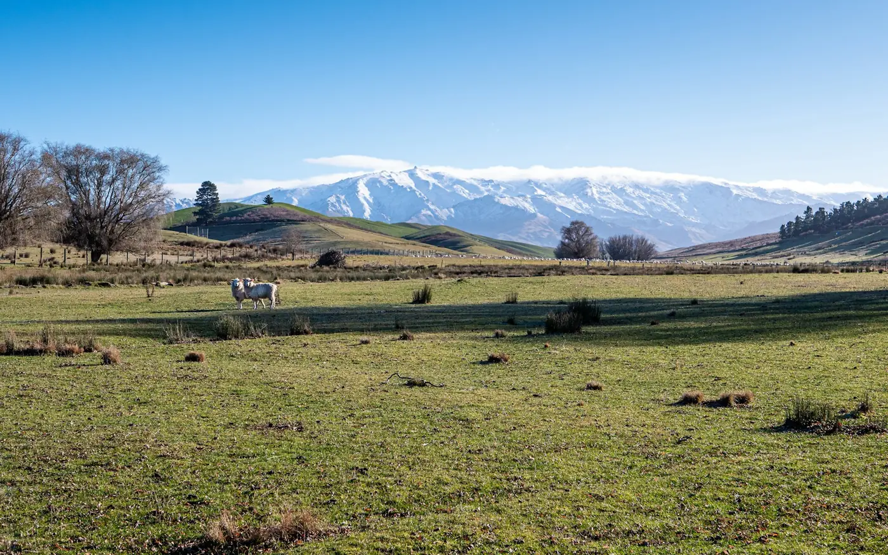
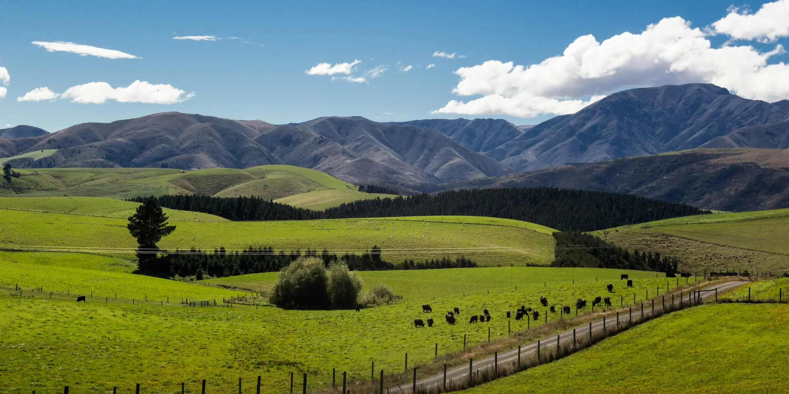
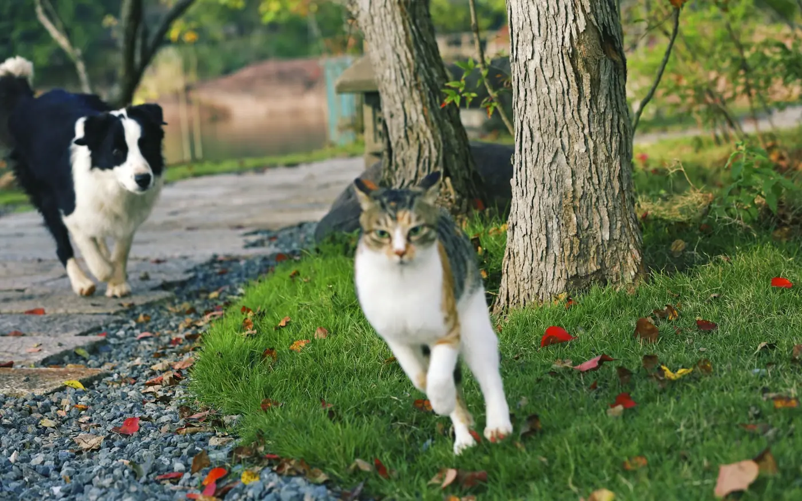

Built by the community
The centre at 4 Seafield Road, Netherby, Ashburton, was established in 2000 by the late John Keeley, an SPCA inspector. He, Rallou Keeley and the local SPCA committee raised the funds and built it.

07.1Our story
The centre's history is short to tell and long in the making: built by local people, then set up as a charity of its own, and still run by volunteers today.

The centre at 4 Seafield Road, Netherby, Ashburton, was established in 2000 by the late John Keeley, an SPCA inspector. He, Rallou Keeley and the local SPCA committee raised the funds and built it.

The centre became an independent local charity. The Mid Canterbury Animal Welfare Centre Incorporated was registered with Charities Services on 2 October 2017.

Volunteers run the centre, with a local committee at the helm. New cats arrive at a separate quarantine building.
The animals in the photographs on this site are illustrative. They are not animals at the centre.
07.2What we do
“Provide facilities for the care, welfare and rehabilitation of animals. Provide public education of animal welfare and assist with enforcement of Animal Welfare Act.”
The register lists the centre's area of operation as Canterbury, and the people it serves as the general public and animals.
07.4Who runs the centre
The Mid Canterbury Animal Welfare Centre Incorporated is an incorporated society and a registered charity. It is governed by a volunteer committee of 5 to 12 people, and the Charities Register currently lists five officers, including a president, a secretary and a treasurer.
Rallou Keeley has been the society's President since 2017, and she managed the centre for twenty years.
Every year the centre files an annual return with Charities Services, the charities regulator within the Department of Internal Affairs. Anyone can read the centre's entry, officers and annual returns on the public register.
Charity detailsCC56428
07.5Where the money goes
Total income and total expenditure for each year, as filed in the centre's annual returns with Charities Services. The register gives totals rather than a breakdown; for the detail, read the annual returns on the register or ask us.
Income, 2025
$9,142
Year ended 31 December 2025
Expenditure, 2025
$46,545
Year ended 31 December 2025
Income, 2024
$80,817
The year before, against $41,652 of expenditure
Income and expenditure, 2018 to 2025 (NZ$)
Year ended 31 December 2025: income $9,142, expenditure $46,545. Point at or tab to a year to read it.
| Year ended | Income | Expenditure |
|---|---|---|
| 31 Dec 2025 | $9,142 | $46,545 |
| 31 Dec 2024 | $80,817 | $41,652 |
| 31 Dec 2023 | $32,398 | $31,720 |
| 31 Dec 2022 | $17,162 | $36,270 |
| 31 Dec 2021 | $25,973 | $31,245 |
| 31 Dec 2020 | $12,774 | $26,004 |
| 31 Dec 2019 | $21,623 | $24,682 |
| 31 Dec 2018 | $39,844 | $26,776 |
07.6Next on the route